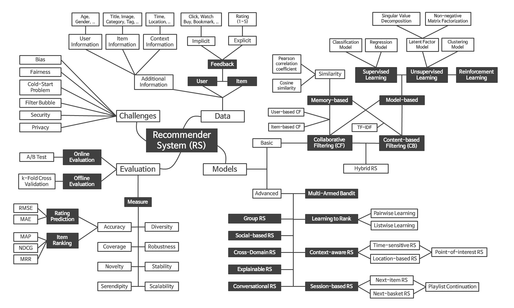
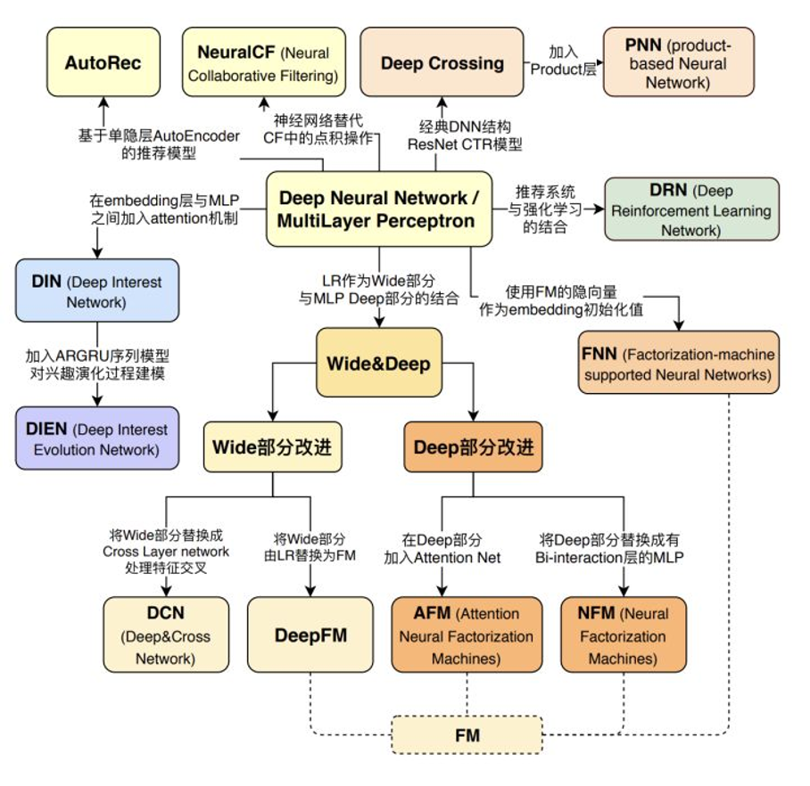

1. RecSys-Notes#
记录推荐系统相关的优化经验、学习笔记。
- 1. RecSys-Notes
- 2. 推荐系统适用场景
- 3. 推荐系统从0到1
- 3.1. 冷启动
- 3.2. 搭建推荐系统
- 4. 推荐系统优化
- 4.1. 召回优化
- 4.2. 排序优化
- 4.3. 策略优化
- 5. 推荐系统的未来
- 5.1. 对长期收益建模
- 5.2. 对item组合建模
- 5.3. 极致的时效性
- 5.4. 更丰富的交互信息
- 5.5. 与其他模块的协同
- 5.6. 自动化AutoML
- 6. 学习资源
2. 推荐系统适用场景#
信息过载+无明确意图
3. 推荐系统从0到1#
在开始搭建推荐系统前，建议可以看看Google的机器学习最佳实践(共43条)【汉】。里面讲到进行机器学习的基本方法是：
- 确保机器学习流程从头到尾都稳固可靠。
- 从制定合理的目标开始。
- 以简单的方式添加常识性特征。
- 确保机器学习流程始终稳固可靠。
上述方法将在长时间内取得很好的效果。只要您仍然可以通过某种简单的技巧取得进展，就不应该偏离上述方法。增加复杂性会减缓未来版本的发布。
从0到1就是要解决冷启动问题，冷启动问题可以用产品的办法解决，也可以在推荐系统内解决。
3.1. 冷启动#
3.1.1. 系统冷启动#
3.1.2. 新用户冷启动#
3.1.3. 新内容冷启动#
3.2. 搭建推荐系统#
一个完整的推荐系统包括：数据采集、数据处理、推荐算法、评估体系。下图把推荐系统的基本结构描述得非常清除了。

3.2.1. 数据采集#
数据采集包括了：用户信息采集(人群属性、兴趣问卷)，用户行为数据采集(埋点日志)，推荐日志，内容打标。
3.2.2. 数据处理#
数据处理包括：样本生成、特征工程、报表
3.2.3. 推荐算法#
经典推荐架构：召回、排序、策略。从0到1的过程中需要特别关注冷启动问题：系统冷启动、用户冷启动、内容冷启动。 - 召回。冷启动阶段没有太多用户行为数据。可以采集用户信息、多利用item标签、捕捉实时信息。热门召回、人群热门召回、用户采集兴趣召回、用户实时兴趣召回。另外需要做召回去重。 - 排序。冷启动阶段最好是用单目标简单模型，把整个流程跑通。 - 策略。黑白名单、调权、频控、打散、保量
有一些开源的推荐系统框架(2022-07-01更新star数)：
- [13.5k] microsoft/recommenders
- [6.2k] shenweichen/DeepCTR 兼容tf1和tf2
- [2k] [shenweichen/DeepCTR-Torch(https://github.com/shenweichen/DeepCTR-Torch) pytorch版本
- [5.9k] gorse-io/gorse 用go实现的推荐系统
- [3.1k] PaddlePaddle/PaddleRec 百度开源，基于PaddlePaddle
- [1.3k] tensorflow/recommenders
- [1k] pytorch/torchrec
- [0.6k] alibaba/EasyRec 兼容TF1.12-1.15 / TF2.x / PAI-TF
3.2.4. 评估体系#
评估体系包括：在线评估（ABtest、报表）、离线评估。
4. 推荐系统优化#
4.1. 召回优化#
4.1.1. 召回的评估#
召回率、准确率、hit率、内容覆盖度、基尼指数
4.1.2. 召回算法#
- 热门召回
- 基于人群属性
- 协同过滤
- [2013] Amazon.com recommendations:Item-to-item collaborative filtering 亚马逊提出经典的item-based协同过滤算法
- 基于向量
- 无监督，类似word2vec
- [2017] Item2Vec-Neural Item Embedding for Collaborative Filtering 其实就是word2vec
- [2018] Real-time Personalization using Embeddings for Search Ranking at Airbnb【汉】 airbnb的房源来旭，基于word2vec，在样本的选择上有很多trick
- 无监督 Graph Embedding
- [2014] DeepWalk: Online Learning of Social Representations]【汉】 无权图+ random-walk + word2vec，学习网络结构，偏DFS
- [2015] LINE: Large-scale Information Network Embedding【汉】 二阶优化，Negative Sampling，alias负采样,偏BFS
- [2016] node2vec: Scalable Feature Learning for Networks【汉】，兼顾DFS和BFS
- [2018] Billion-scale Commodity Embedding for E-commerce Recommendation in Alibaba【汉】 引入side info，weight avg polling，
- 有监督
- [2013] DSSM【汉】
- 论文用的 sample softmax 4个负样本
- 也可以用triplet loss 高内聚，低耦合
- [2016] DeepMatch:Deep Neural Networks for YouTube Recommendations【汉】
- 每个用户固定样本数量，避免高活用户带偏模型。加入样本年龄来消偏。ranking阶段用时长加权。
- serving的时候用ANN库，如Faiss、HNSW
- [2018] TDM: Learning Tree-based Deep Model for Recommender Systems【汉】 利用品类信息初始化数，学到向量之后用k-means聚类
- [2019] MOBIUS: Towards the Next Generation of Query-Ad Matching in Baidu’s Sponsored Search【汉】 广告召回兼顾相关性和CTR等业务指标。人工构造低相关高ctr的样本做为负样本。
- [2019] Deep Semantic Matching for Amazon Product Search 购买、曝光未购买、随机三类样本，商品这边用n-gram引入商品title然后和商品其他属性特征一起过nn得到商品的向量。把oov的n-gram hash到指定数量的bin里面。
- [2019] SDM: Sequential Deep Matching Model for Online Large-scale Recommender System【汉】 短期兴趣是一个session内的行为，最多50个，用lstm + multi-head self-attention + user attention, 长期兴趣是7天，各种序列，先过atten，然后concat到一起。最后又搞了一个gate来融合长短期特征。就一个疑问：召回模型这么搞能训得动吗？
- [2019] Multi-Interest Network with Dynamic Routing for Recommendation at Tmall【汉】
- [2020] Deep Retrieval: Learning A Retrievable Structure for Large-Scale Recommendations【汉】
- [2020] Embedding-based Retrieval in Facebook Search【汉】 双塔模型，负样本选择，serv的处理，非常的工业风
- [2020] Controllable Multi-Interest Framework for Recommendation【汉】
- [2021] Que2Search: Fast and Accurate Query and Document Understanding for Search at Facebook【汉】
- [2021] Embedding based Product Retrieval in Taobao Search【汉】 双塔，把用户侧搞得特别复杂，有query(query用n-gram,transormer等各种放方法处理)，有用户行为序列(实时、短期、长期)，有lstm，transformer、attention等来处理序列。
- [2021] Pre-trained Language Model for Web-scale Retrieval in Baidu Search【汉】
构建item向量索引：
- 向量索引的方法
- 树，如KDtree
- hash，如LSH
- 聚类倒排，倒排里面有PCA降维，PQ降精度
- 图算法,如NSW
- 开源向量索引库(2022-07-02更新star数)
- [17.3k] faiss 支持billion级别向量索引
- faiss原理（Product Quantization） IVFPQ，支持L2和内积
- Billion-scale similarity search with GPUs
- [11.2k] milvus 已经是一个数据库了
- architecture_overview
- 前所未有的 Milvus 源码架构解析
- [10k] annoy 支持 欧氏距离，曼哈顿距离，余弦距离，汉明距离或点(内)乘积距离
- 一文带你了解Annoy！
- [2k] hnswlib 支持L2、内积、cos等距离方法
- Bithack/go-hnsw
- ANN召回算法之HNSW
- [1.4K] vearch 京东开源
- [24k] google-research/tree/master/scann
参考: 几款多模态向量检索引擎：Faiss 、milvus、Proxima、vearch、Jina等
4.1.3. 召回负样本处理#
4.1.4. 推荐历史去重#
4.2. 排序优化#
4.2.1. 排序的评估#
- 线上评估
- ABtest。留存、时长、ctr、刷帖、点赞、评论、转发等
- 模型评估指标。在线auc、gauc
- 离线评估
- 分类。auc、guac
- 回归。rmse、mae、mape
- debug工具
- 推荐线上服务debug
- 在推荐的整个留存打印debug信息，然后把debug信息放到debug工具中展示。
- 模型debug
- TensorBoard
评估指标
- MAP (Mean Average Precision)
- NDCG (Normalized Discounted Cumulative Gain)
4.2.2. 代理指标#
不同业务线的业务目标，用户关键行为都不一样，需要针对性的建模。另外构建一套样本是成本非常大的事情，包括推动前端增改卖点，大数据做好样本关联，数据校验，累计一段时间样本用于训练，整个周期会非常长。所以一般推荐在一开始就把所有能想到的user-item的行为数据都做好埋点。
- 电商
- GMV。GMV=DAUCTRCVR下单次数单均价。以上指标一般是uv维度，按照天、周级别统计。无法作为直接排序label
- item级别行为。曝光、击、加购、下单、成单、评分。电商的行为在时间维度上可能不较长，如成单、评分等动作的延迟甚至可能是几天。
- 娱乐
- 用户总停留时长。TotalDur=DAU刷帖数贴均时长=(DNU+DAU留存)刷帖数*贴均时长。
- item级别行为。
- 隐式反馈：曝光、点击、时长、完播
- 显式反馈：点赞、评论、转发
- 社交
- 总互动。总互动=DAU匹配率互动数。
- item级别行为。曝光、点击、关注、互动
排序的迭代路径一般是由一轮排序，到包含粗排、精排的两轮排序。甚至随着候选池的增加，可以增加更多轮排序。由单一目标排序，到多目标融合排序。由简单模型到复杂模型。LR、FM、Wide&Deep、DIN、MMOE、SNR
引入多目标的几种方式： - 样本调权 - 见：街首页推荐多目标优化之reweight实践：一把双刃剑？ - 线性加权。Score = a*scoreA + b * scoreB + c * ScoreC + … + m * ScoreM - 乘法加权。一般用在电商场景 Score = pow(ctr+ai, bi) * pow(price+aj, bj)
业界的一些多目标融合的实践： - BIGO | 内容流多目标排序优化 - 爱奇艺：多目标排序在爱奇艺短视频推荐中的应用 - 快手：多目标排序在快手短视频推荐中的实践
4.2.3. 特征工程#
- 主体维度
- 用户
- 人群属性
- 行为特征
- 统计特征
- item
- 标签
- 统计特征
- context
- 地理位置
- 时间
- 推荐tab
- 时效性维度
- 批量特征
- 实时特征
内容理解。通过NLP和CV的能力，给视频、图片的自动打标。做好场景识别、人脸识别、OCR、文本的关键词提取等。 NLP相关：
- Glove NLP模型笔记】GloVe模型简介 相比起绝对地描述一个词语，通过与第三者的比较，得到第三者与两个词语中的哪个更接近这样一个相对的关系，来表达词语的含义，实际上更符合我们对于语言的认知。这样学习出来的vector space具有一个meaningful substructure。
- dav-word2vec 【汉】 google的word2vec
- [2016] Bag of Tricks for Efficient Text Classification【汉】 facebook开源的FastText，char-level n-gram,
- [2017] Attention Is All You Need Transformer
- [2018] BERT(Bidirectional Encoder Representations from Transformers) 上下文相关的表达，采用底层的双向编码，预训练与调优
CV相关
4.2.4. 样本#
样本=label+特征。 label一般来自客户端的埋点，也有用到服务端数据的(比如，点赞、成单等数据服务端也有记录)。一般都会有多个label日志(曝光、点击、时长、点赞等)，需要把这些日志关联起来。特征来源于推荐埋点日志或离线批处理特征，最好是把特征都埋在推荐replay日志中，这样可以避免离线在线特征不一致问题。label埋点和推荐replay日志的关联可以通过约定的唯一性id来确定，如：user_id、item_id对，或者唯一性的session_id。
label埋点日志关联，可以在客户端关联，也可以在大数据这里关联。为了减少客户端的复杂性，现在一般都是无代码埋点，只埋事件日志，然后由大数据这边关联。中间存在一些问题：
- 日志丢失
- 客户端要做日志的持久化, 会导致日志延迟比较大，不过总比丢了好
- 日志回传要做好丢包重传等机制
- 服务端接收后一般是直接到kafka
- user-itme粒度的日志回传事件跨度大
- 天级别批处理，要做好跨天的处理
- 实时关联，一般设定cache时间窗口
- 负样本cache,skip-above
- 负样本不cache，会有False Negative问题
- 样本重要性采样(importance sampling)
- FN矫正
- PU loss (Positive-unlabeled loss) 问题是来多个正样本怎么办
- 延迟反馈 Loss
4.2.5. 模型#
正则：L1、L2、Dropout、BatchNorm、Relu 序列建模：Attention、Transformer、GRU、LSTM 参数共享：gate、routing 优化器：FTRL、Adagrad、Adam
树模型：
- GBDT
- GBDT（MART） 迭代决策树入门教程 | 简介
- GBDT：梯度提升决策树 看过之后对gbdt原理有了大概了解，感觉还需要去了解决策树、adaboost、random forest、xgboost 这些东西。
- 机器学习算法总结--GBDT
- Xgboost
- Introduction to Boosted Trees 1.5h xgboost官网上对BT介绍文章，这个文章降低非常浅显易懂，首先摆出训练时的优化函数=偏差+复杂度，我们要在减少偏差和减少复杂度之间寻求平衡，先讲了CART的结构，然后讲BT是一步步添加树的，然后讲到每次添加一棵树的时候，是如何从众多树里面寻找到最好的那颗树，这里面就是刚刚说的优化函数。最后在讲了单颗的训练过程中也可以尽量去优化。感觉大致懂了，有时间再去深究里面的一些东西吧。 论文 XGBoost: A Scalable Tree Boosting System
- xgboost 实战以及源代码分析
- xgboost_code_analysis
- XGboost核心源码阅读
- DART booster 在gbtree.cc中看到dart，特性就是通过drop树来解决over-fitting。但是预测会变慢，early-stop可能不稳定。
- Dropout 解决 overfitting 简单搜了下，在NN中就是drop一些单元，属于一种正则化的手段。
- Monotonic Constraints 在模型训练中添加单调性约束
- 模型调参
- xgboost参数(汉) 这些参数不太懂：gamma 、 max_delta_step、colsample_bylevel、alpha、lambda、 b。 个人理解所有的GB，学出来的都是tree，本质上就是用特征将目标进行分类。一颗树学习得太浅，所以会学出很多颗tree，然后加权到一起，这样可以学得更精细一点，可以对一个特征进行更多次切分，可以试验多种特征组合。 然后由于用于训练的样本是有限的，训练样本级与实际总样本之间可能存在偏差，而我们学到的森林其实是对我们的样本集的统计学特性的模拟，和样本拟合得太匹配，就越容易拟合到其中的偏差部分。所以会通过控制树的深度、叶子节点的样本最小数量等控制精度，以免学得太过了。 由于样本收集的时候可能存在一些不随机的部分，就是有偏差。我们在样本集的基础上，做一些处理，来消除这个不随机的部分。一种是随机的抽一部分样本（随机样本子集），一种是训练的时候只训练一部分特征（随机特征子集）。 还有一种就是我们学习的时候，不要学得太像这个样本了，就是所谓的学习率调低一点，学习得更模糊一点。 另一方面因为是GB，就是梯队推进，就是走一段路看一下调整方向，然后继续继续往前走一步。这个过程中，如果每次走的路短一点，就是增加了对齐方向的次数，就越不容易出现偏差，就不容易过拟合。 如果样本集的正负样本数量差距太大，可能导致正样本被埋没了，所以有必要增加正样本的权重。
- param_tuning 理解样本偏差，控制过拟合，处理不平衡的数据集。
- 论XGBOOST科学调参
- 为什么xgboost/gbdt在调参时为什么树的深度很少就能达到很高的精度？
- 机器学习算法中GBDT和XGBOOST的区别有哪些？
- xgboost如何使用MAE或MAPE作为目标函数?
- Xgboost-How to use “mae” as objective function?
- 模型分析
- xgbfi xgboost特征交互和重要度。里面提到用Gain（特征增益）和Cover（分裂方向的概率）构造出期望增益ExpectedGain，相比于分裂次数更能体现特征的实际作用。另外考虑了如何评估多个特征之间的影响，就是计算一条路径的增益。不过工具还不完善，对评估指标本身也没有进行详细解释。
- Understand your dataset with XGBoost xgboost提供了特征重要度工具，主要有gain和cover
- LightGBM

从LR到DNN模型：
- [2007] Predicting clicks: estimating the click-through rate for new ads LR算法应用于CTR问题
- [2010] Factorization Machines FM算法
- [2011] Fast Context-aware Recommendations with Factorization Machines
- [2013] Ad Click Prediction: a View from the Trenches 提出了FTRL算法
- [2014] Practical lessons from predicting clicks on ads at facebook LR+GBDT组合模型
- [2016] Deep Neural Networks for YouTube Recommendations 排序这里用时长作为正样本权重，然后预估近似时长
- [2016] Wide & Deep Learning for Recommender Systems【汉】 wide记忆，deep稠密特征交叉
- 特征交叉
- [2016] Deep Crossing: Web-Scale Modeling without Manually Crafted Combinatorial Features【汉】 没用过。感觉跟其他DNN模型差不多，可能跟DSSM比，emb喂给MLP更早，所以叫corss吧。
- [2016] Product-based Neural Networks for User Response Prediction【汉】 emb先做两两交叉，然后再喂给MLP。
- [2017] DeepFM : A Factorization-Machine based Neural Network for CTR Prediction【汉】DeepFM在Wide&Deep的基础上引入了交叉特征，使得模型能够更好的学习到组合特征，wide是一阶，FM是二阶交叉，MLP是高阶交叉。
- [2017] Deep & Cross Network for Ad Click Predictions【汉】 对Wide & Deep模型优化，将Wide & Deep模型中的Wide部分替换成Cross network，用于自动化特征交叉。试过，参数量有点大。
- [2017] Attentional Factorization Machines: Learning the Weight of Feature Interactions via Attention Networks【汉】 AFM对FM不同的特征交互引入不同重要性来改善FM，重要性通过注意力机制来学习；
- [2018] xDeepFM: Combining Explicit and Implicit Feature Interactions for Recommender Systems【汉】 在DCN基础上，用CIN代替cross网络，每个vector一个参数，而不是每个bit一个参数。
- [2019] Feature Generation by Convolutional Neural Network for Click-Through Rate Prediction【汉】 底层用卷积在做特征的局部交叉
- [2019] Interaction-aware Factorization Machines for Recommender Systems 有点像AFM，在FM基础上魔改。
- [2019] FiBiNET: Combining Feature Importance and Bilinear feature Interaction for Click-Through Rate Prediction 【汉】通常处理特征交叉是通过Hadamard product和inner product，很少关注交叉特征的重要性，在FiBiNET中，改进特征的交叉方式以及增加特征重要行的学习，分别通过SENET机制动态学习特征的重要性，通过bilinear函数学习特征的交叉
- [2019] AutoInt: Automatic Feature Interaction Learning via Self-Attentive Neural Networks【汉】 用multi-head self attention来学习emb的交叉
- 序列特征建模
- [2016] Session-based Recommendations with Recurrent Neural Networks【汉】 用GRU来对用户session序列建模，不过很少这么建模。因为还要考虑跟其他特征怎么组合进来的问题。
- [2018] Deep Interest Network for Click-Through Rate Prediction【汉】 DIN其实就是序列emb加权求和
- [2019] Behavior Sequence Transformer for E-commerce Recommendation in Alibaba【汉】 item序列过tranformer，多层tranformer后auc反而降低
- [2019] Deep Interest Evolution Network for Click-Through Rate Prediction DIEN，用GRU来建模用户兴趣迁移
- [2019] Deep Session Interest Network for Click-Through Rate Prediction【汉】
- [2019] BERT4Rec: Sequential Recommendation with Bidirectional Encoder Representations from Transformer【汉】 直接用bert来建模用户序列特征
- [2017] Learning Piece-wise Linear Models from Large Scale Data for Ad Click Prediction【汉】 阿里的MLR模型，把样本聚成多簇，然后分别用LR去分类。
- [2019] Real-time Attention Based Look-alike Model for Recommender System 实时Look-alike 算法在微信看一看中的应用
- [2019] Deep Learning Recommendation Model for Personalization and Recommendation Systems facebook的DLRM，比较工业风
- [2020] FuxiCTR: An Open Benchmark for Click-Through Rate Prediction 【汉】对多种CTR模型的对比，包括浅层模型和深度模型，浅层模型包括LR，FM，FFM等，深度模型包括DNN，Wide&Deep，PNN等
- [2020] COLD: Towards the Next Generation of Pre-Ranking System【汉】 长期以来，粗排（pre-ranking）一直被认为是精排（ranking）的简化版本，这就导致系统会陷入局部最优，文中提出COLD同时优化粗排模型和计算效率
模型引入图像特征：
- [2017] Visual Search at eBay
- [2017] Visual Search at Pinterest
- [2021] Visual Search at Alibaba
推荐的可解释性：
- [2018] Explainable Recommendation via Multi-Task Learning in Opinionated Text Data【汉】 个性化推荐的可解释性，需要依赖用户对商品的评论信息进行训练。
- [2018] TEM: Tree-enhanced Embedding Model for Explainable Recommendation【汉】
- [2018] Neural Attentional Rating Regression with Review-level Explanations【汉】
多任务模型结构：
- [2018] ESMM【code】
- [2018] MMOE
- [2019] MKR【code】【汉】
- [2019] Recommending What Video to Watch Next: A Multitask Ranking System【汉】
- [2019] SNR:Sub-Network Routing for Flexible Parameter Sharing in Multi-Task Learning
- [2019] A Pareto-Efficient Algorithm for Multiple Objective Optimization in E-Commerce Recommendation
- [2019] Recommending What Video to Watch Next: A Multitask Ranking System 多目标优化是推荐系统中一个重要的研究方向，文章为解决多目标提出Multi-gate Mixture-of-Experts，以及为解决选择偏差的问题，提出对应的解决方案
- [2020] Progressive Layered Extraction (PLE): A Novel Multi-Task Learning (MTL) Model for Personalized Recommendations【汉】 腾讯的PLE，就是有私有expert和公共expert
多任务模型的loss设计：
- 多个label的loss如何平衡 【知乎上的讨论】
- [2017] GradNorm: Gradient Normalization for Adaptive Loss Balancing in Deep Multitask Networks 对更新快的任务，使用小一点的学习率，对更新慢的任务，使用大一点的学习率。
- [2018] Multi-Task Learning Using Uncertainty to Weigh Losses for Scene Geometry and Semantics 【code】 基于不确定性，最终效果比我人工调参的结果好一丢丢
- [2019] Multi-Task Learning as Multi-Objective Optimization
业界实践
4.2.6. 偏置处理#
偏置的类型：
- 点击位置偏置
- 视频时长偏置
处理偏置的方法：
- 模型训练学习bias，serv的时候去掉bias
4.3. 策略优化#
4.3.1. 打造生态：消费者、生产者、平台三方利益兼顾#
4.3.2. 流量扶持：新内容、新生产者、新品类#
4.3.3. 探索与利用#
缓解回音壁、保持多样性、提供惊喜和新鲜感
4.3.4. 如何缓解头部效应#
4.3.5. 重排模型#
- [2019] Personalized Re-ranking for Recommendation【汉】 rerank的10个item是一个序列，用transformer来重排
- 微信「看一看」 推荐排序技术揭秘 重排用到了DQN
5. 推荐系统的未来#
5.1. 对长期收益建模#
强化学习在推荐的应用：
- [2018] Top-K Off-Policy Correction for a REINFORCE Recommender System【汉】 据说获得了Youtube近两年单次上线的最高收益，看起来是召回阶段，召回的优化效果都这么牛逼！
- [2019] Reinforcement Learning for Slate-based Recommender Systems: A Tractable Decomposition and Practical Methodology【汉】 这个是用来排序的ctr*Q值
- Values of User Exploration in Recommender Systems 评估探索对长期收益的影响。对比了两种探索的做法：Entropy Regularization 和 Intrinsic Motivation(其实就是对没见过的item加一个提权)。多样性和新颖性并不一定带来用户体验上升，并且过犹不及。惊喜度才是长期收益的关键。
强化学习的资料：
5.2. 对item组合建模#
5.3. 极致的时效性#
实时特征、实时模型、端上重排
- 实时特征。这个最容易，时效性可以比模型高。
- 实时模型
- 半实时
- GBDT+LR
- Wide&Deep
- 全实时。现在都有ps了，模型本身是可以实时训练的。这里有几个问题
- 模型的batch大小。为了凑齐batch最长等多久。
- 更新serving模型的实践间隔。一个是工程问题，大模型参数同步也要实践。另外一个是更新太快不一定有效果。对广告这种特别依赖id，且素材id更新非常频繁的，可能会比较有用。
- 端上重排
实时优化器。本质上就是要加好正则，避免被少数样本带偏了
- FTRL(Follow The Regularized Leader)
- [Online Learning算法理论与实践](https://tech.meituan.com/online_learning.html) 主要介绍Online Learning的基本原理和两种常用的Online Learning算法：FTRL（Follow The Regularized Leader）和BPR（Bayesian Probit Regression）。基本原理理解，具体公式推导有点晕。
- [RDA， FTRL 在线学习算法最初的优化公式是依据什么得到的？](https://www.zhihu.com/question/266462198/answer/309780073)
- [在线学习（Online Learning）导读](https://zhuanlan.zhihu.com/p/36410780)
- [Online Learning and Online Convex Optimization](http://www.cs.huji.ac.il/~shais/papers/OLsurvey.pdf) 其中的2.3节讲到FTRL
- MIRA(Margin-infused relaxed algorithm)
- [浅谈在线机器学习算法](http://yjliu.net/blog/2012/07/14/a-brief-talk-about-online-learning.html) 提到了Perceptron算法用于二分类问题，MIRA算法用于多类问题。
- Online gradient descent: Logarithmic Regret Algorithms for Online Convex Optimization
- Dual averaging: Dual Averaging Methods for Regularized Stochastic Learning and Online Optimization
- Adagrad: Adaptive Subgradient Methods for Online Learning and Stochastic Optimization
- PA(Online Passive-Aggressive Algorithms)
- [Online Passive-Aggressive Algorithms](https://link.zhihu.com/?target=http%3A//www.jmlr.org/papers/volume7/crammer06a/crammer06a.pdf) Shai Shalev-Shwartz于[2006]发表，提出了一种基于边界的在线学习算法簇，可以支持多种预测任务。具体来说可以用于二分类、回归、多分类、序列预测等任务，使用hingeloss损失函数。
- [Online Learning：Theory, Algorithms, and Applications](http://ttic.uchicago.edu/~shai/papers/ShalevThesis07.pdf) Shai Shalev-Shwartz的博士论文，[2007]发表，旨在建立一个支持多种预测任务的在线学习簇。
- 综述性文章
- [Online Learning and Stochastic Approximations](http://leon.bottou.org/publications/pdf/online-1998.pdf) L´eon Bottou，AT&T实验室，[2018]修订版，在线学习和随机优化的解释文章。
- [Online Learning and Online Convex Optimization](http://www.cs.huji.ac.il/~shais/papers/OLsurvey.pdf) Shai Shalev-Shwartz于[2011]写的一篇综述性论文
5.4. 更丰富的交互信息#
5.5. 与其他模块的协同#
迁移学习。引入其他人口(如搜索)，其他app的用户信息。
5.6. 自动化AutoML#
AutoML工具(2022-07-07更新star数):
- 资料
- windmaple/awesome-AutoML
- AutoML: Methods, Systems, Challenges (first book on AutoML) automl的书2019年出版
- HPO 超参搜索
- mode-free, 网格搜索，随机搜索，guide search 固定一个参数找到最优质然后训练下一个，进化算法(遗传算法、进化算法、粒子群优化)
- bayesian优化，多保真度优化(就是先用少量子集去筛选各种参数，然后逐渐增加样本量)
- meta-learning，元数据，用元数据学习参数空间特点如：参数重要性、参数间的相关性，任务之间的相似性。
- 从之前的模型学习。迁移学习、NN里的元学习、few-shot learning、
- NAS neural architecture search，神经架构搜索。搜索空间、搜索策略、性能评估。
- AutoML的一些开源项目
- 超参搜索
- [21.2k] ray-project/ray 其中Tune是超参学习，RLlib是强化学习学习。
- Ray Tune
- [6.3k] hyperopt/hyperopt
- 自动特征
- [6.5k] blue-yonder/tsfresh 从时间序列自动提取特征
- [6.3k] alteryx/featuretools 自动特征工程开源库
- [2k] scikit-learn-contrib/category_encoders 分类特征编码
- automl框架
- [8.6k] keras-team/autokeras
- [8.6k] EpistasisLab/tpot
- [5.9k] h2oai/h2o-3